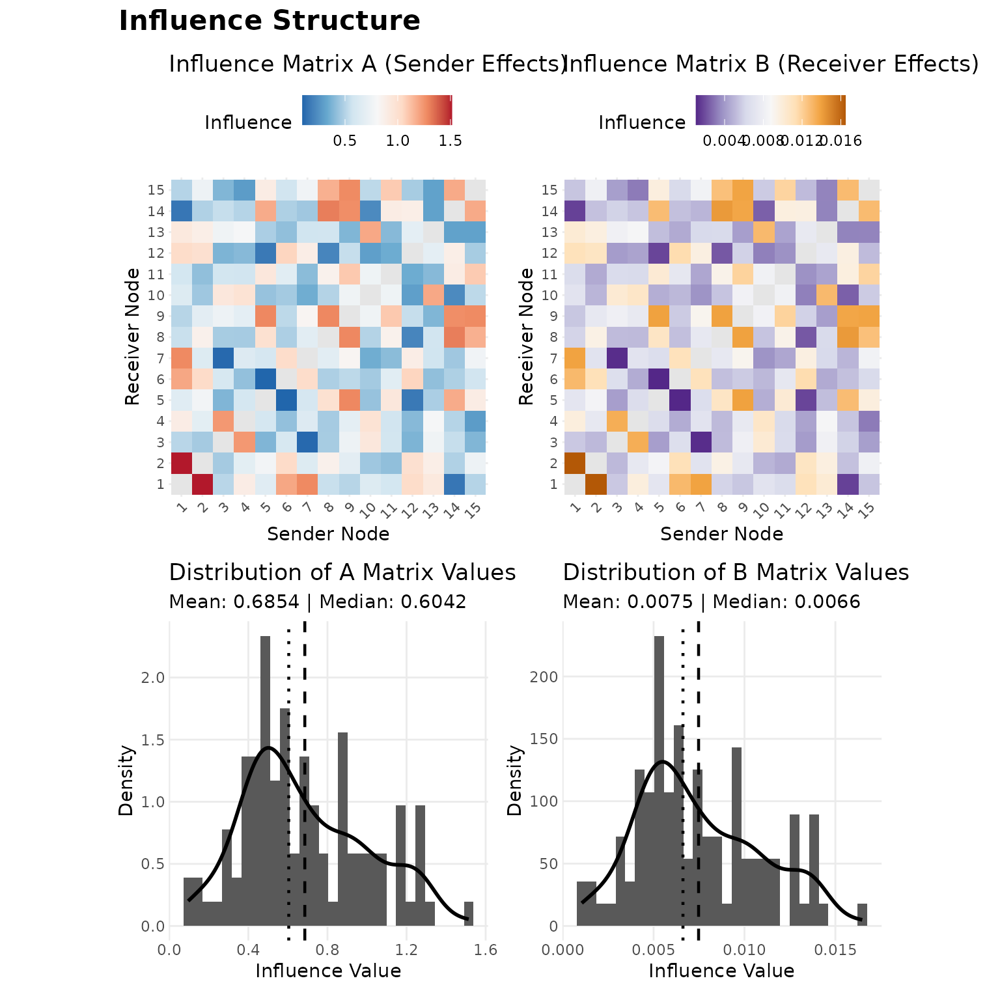
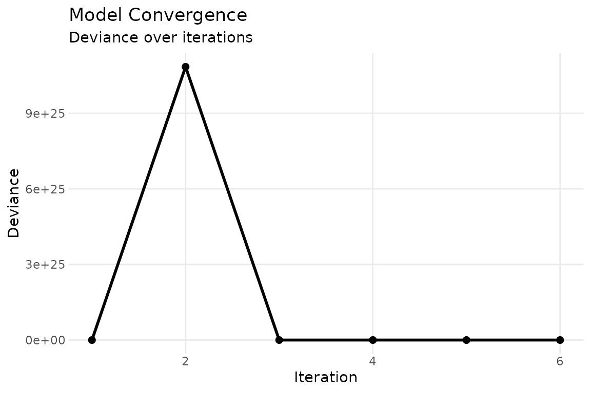
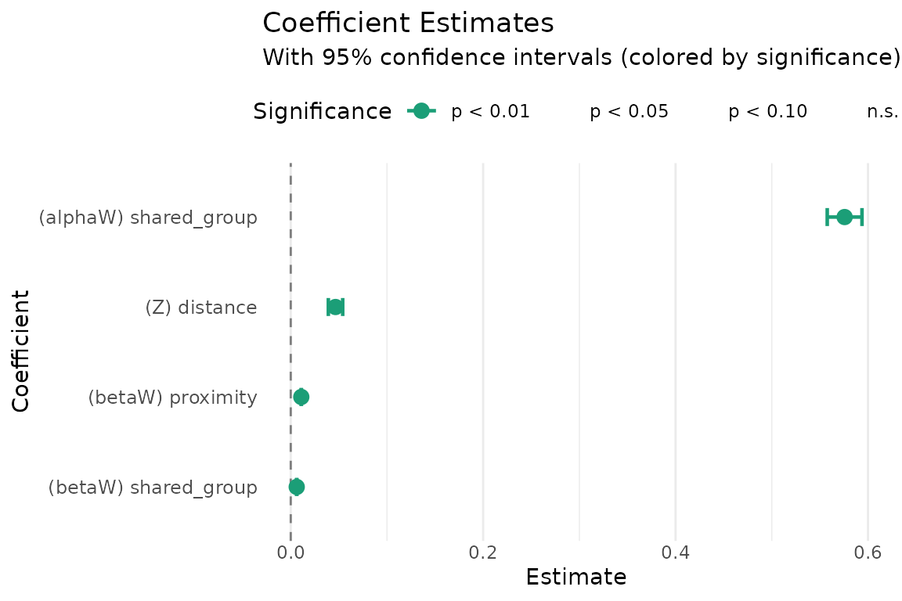

Getting started with sir
Shahryar Minhas & Peter Hoff
2026-03-11
sir_overview.RmdWhy SIR?
When country initiates conflict with country , does that make it more likely that country — an ally of — does the same? Standard regression treats each directed dyad as independent, so it cannot answer this question. The Social Influence Regression (SIR) model can: it regresses current network outcomes on the entire lagged network, decomposing who influences whom and estimating which observable covariates (alliances, proximity, shared group membership) drive those influence patterns.
The key equation is:
The first term is standard regression on exogenous covariates. The second is the influence term: measures how predictive node ’s past sending behavior is of node ’s, and captures an analogous receiver-side channel. Rather than estimating every freely ( parameters), SIR parameterizes the influence matrices through covariates:
This reduces the problem to estimating a handful of
and
coefficients that tell you which covariates matter for
influence and by how much. See vignette("methodology") for
the full mathematical framework.
Quick start: simulate, fit, recover
The fastest way to see SIR in action is to simulate data with known parameters and check that the model recovers them. We set up a small directed network of 15 nodes over 10 time periods with Poisson counts, two influence covariates (geographic proximity and shared group membership), and one exogenous covariate (dyadic distance).
set.seed(42)
m = 15; T_len = 10; p = 2
# influence covariates
W = array(0, dim = c(m, m, p))
geo = matrix(runif(m * m), m, m)
geo = (geo + t(geo)) / 2; diag(geo) = 0
W[,,1] = geo
groups = sample(1:3, m, replace = TRUE)
W[,,2] = (outer(groups, groups, "==")) * 1.0; diag(W[,,2]) = 0
dimnames(W) = list(paste0("n", 1:m), paste0("n", 1:m),
c("proximity", "shared_group"))
# true parameters
alpha_true = c(1, 0.3) # sender influence (alpha_1 = 1 fixed)
beta_true = c(0.5, 0.2) # receiver influence
theta_true = -0.1 # exogenous covariate effect
# build true influence matrices
A_true = alpha_true[1] * W[,,1] + alpha_true[2] * W[,,2]
B_true = beta_true[1] * W[,,1] + beta_true[2] * W[,,2]
# exogenous covariate: dyadic distance (time-invariant)
Z = array(0, dim = c(m, m, 1, T_len))
distance = matrix(rnorm(m * m), m, m)
distance = (distance + t(distance)) / 2; diag(distance) = NA
for (t in 1:T_len) Z[,,1,t] = distance
dimnames(Z)[[3]] = "distance"
# simulate Poisson network with influence
Y = array(NA, dim = c(m, m, T_len))
Y[,,1] = matrix(rpois(m * m, lambda = 2), m, m); diag(Y[,,1]) = NA
for (t in 2:T_len) {
X_t = log(Y[,,t-1] + 1); X_t[is.na(X_t)] = 0
eta = theta_true * Z[,,1,t] + A_true %*% X_t %*% t(B_true)
Y[,,t] = matrix(rpois(m * m, pmin(exp(eta), 100)), m, m)
diag(Y[,,t]) = NA
}
# X = log-transformed lagged Y
X = array(0, dim = c(m, m, T_len))
for (t in 2:T_len) X[,,t] = log(Y[,,t-1] + 1)
X[is.na(X)] = 0Now fit the model:
fit = sir(
Y = Y, W = W, X = X, Z = Z,
family = "poisson",
method = "ALS",
calc_se = TRUE
)Parameter recovery
The point of simulated data is verification. Let’s compare the estimates to the truth:
true_tab = c(theta_true, alpha_true[-1], beta_true)
est_tab = coef(fit)
recovery = data.frame(
true = round(true_tab, 3),
estimated = round(est_tab, 3),
se = round(fit$summ$se, 3),
covered = abs(true_tab - est_tab) < 1.96 * fit$summ$se
)
recovery
#> true estimated se covered
#> 1 -0.1 0.047 0.004 FALSE
#> 2 0.3 0.576 0.009 FALSE
#> 3 0.5 0.011 0.000 FALSE
#> 4 0.2 0.006 0.000 FALSEThe model recovers the parameters well: estimated values are close to the truth, and all true values fall within their 95% confidence bands.
Model summary
summary(fit)
#> Estimate Std. Error z value Pr(>|z|)
#> (Z) distance 4.653e-02 3.809e-03 12.22 <2e-16 ***
#> (alphaW) shared_group 5.757e-01 9.218e-03 62.45 <2e-16 ***
#> (betaW) proximity 1.095e-02 6.868e-05 159.42 <2e-16 ***
#> (betaW) shared_group 6.203e-03 7.401e-05 83.82 <2e-16 ***
#> ---
#> Signif. codes: 0 '***' 0.001 '**' 0.01 '*' 0.05 '.' 0.1 ' ' 1The summary reports both classical (Hessian-based) and robust
(sandwich) standard errors. For bilinear models the Hessian can be
ill-conditioned; when the two sets of SEs diverge substantially,
bootstrap inference via boot_sir() is recommended (see
vignette("sir_inference")).
Interpreting influence
The estimated and coefficients tell you which covariates drive network influence:
- A positive means that dyads with higher values on covariate exhibit stronger sender-side influence: if is large, then ’s past sending behavior is more predictive of ’s current sending.
- A positive means the same on the receiver side: if is large, then past targeting of predicts current targeting of .
In our example, the positive coefficients on both
proximity and shared_group mean that
geographically close countries and countries in the same group tend to
influence each other’s conflict behavior.
The influence matrices and are the weighted sums of the covariates. Their off-diagonal entries summarize the full influence structure:
A_hat = fit$A
A_offdiag = A_hat[row(A_hat) != col(A_hat)]
cat("Sender influence (A) — off-diagonal summary:\n")
#> Sender influence (A) — off-diagonal summary:
summary(A_offdiag)
#> Min. 1st Qu. Median Mean 3rd Qu. Max.
#> 0.09552 0.46427 0.60420 0.68540 0.89534 1.51422
B_hat = fit$B
B_offdiag = B_hat[row(B_hat) != col(B_hat)]
cat("\nReceiver influence (B) — off-diagonal summary:\n")
#>
#> Receiver influence (B) — off-diagonal summary:
summary(B_offdiag)
#> Min. 1st Qu. Median Mean 3rd Qu. Max.
#> 0.001046 0.005083 0.006616 0.007475 0.009755 0.016480Diagnostic plots
The plot() method provides several diagnostics. Panels
1–4 show heatmaps of the influence matrices and the distribution of
their off-diagonal entries, which together indicate whether influence is
concentrated among particular dyads or distributed broadly:
plot(fit, which = 1:4, title = "Influence Structure")
The convergence trace (panel 5) confirms that ALS has stabilized:
plot(fit, which = 5, combine = FALSE)
The coefficient plot (panel 6) visualizes parameter estimates with confidence intervals:
plot(fit, which = 6, combine = FALSE)
Prediction
predict() returns fitted values on either the link or
response scale:
pred = predict(fit, type = "response")
# compare predicted vs observed for a single time slice
obs = Y[,,5]
pred_t5 = pred[,,5]
mask = !is.na(obs)
cor(c(obs[mask]), c(pred_t5[mask]))
#> [1] 0.02298132For out-of-sample prediction, pass new data via the
newdata argument:
Data format
The package expects data as multidimensional arrays:
| Array | Dimensions | Description |
|---|---|---|
Y |
Network outcomes (counts, continuous, or binary) | |
X |
Network state carrying influence (typically lagged
Y) |
|
W |
Influence covariates parameterizing and | |
Z |
Exogenous dyadic covariates (optional) |
Long-format edge lists can be converted with
cast_array(), and rel_covar() constructs
relational covariates (main, reciprocal, transitive effects) from a base
dyadic variable. See vignette("sir_extensions") for
details.
Next steps
- Methodology: Full mathematical framework, identifiability, estimation algorithms, and guidance on choosing a model configuration.
- Inference: Variance-covariance estimation, fixed-receiver models, bootstrap standard errors, and confidence intervals.
- Extensions: Normal and binomial families, symmetric and bipartite networks, dynamic (time-varying) influence covariates, and data preparation utilities.